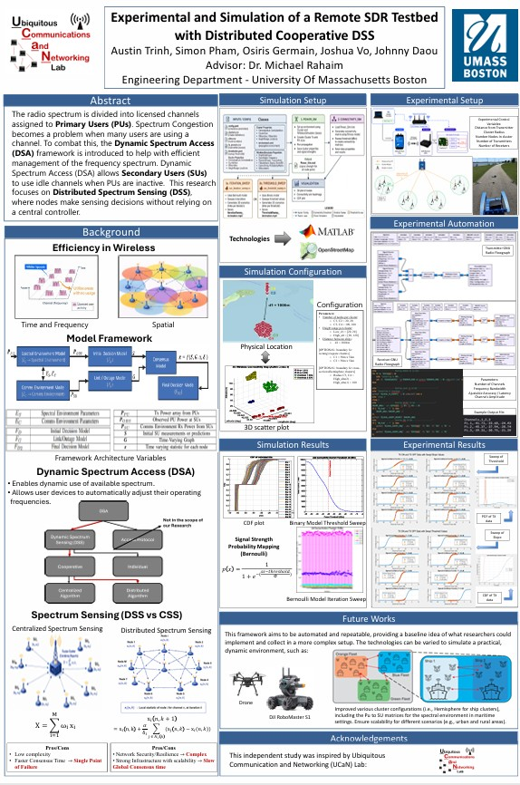
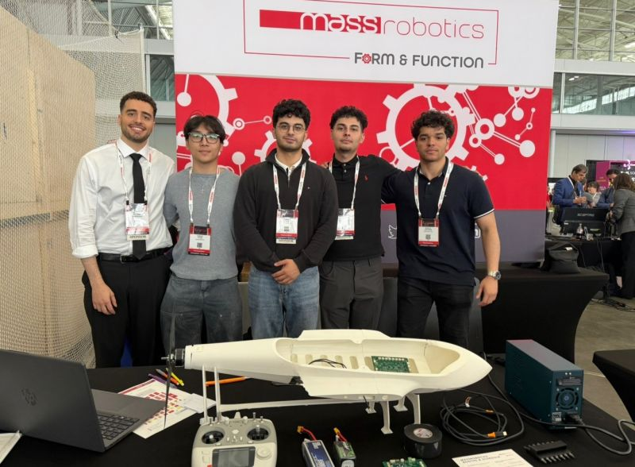
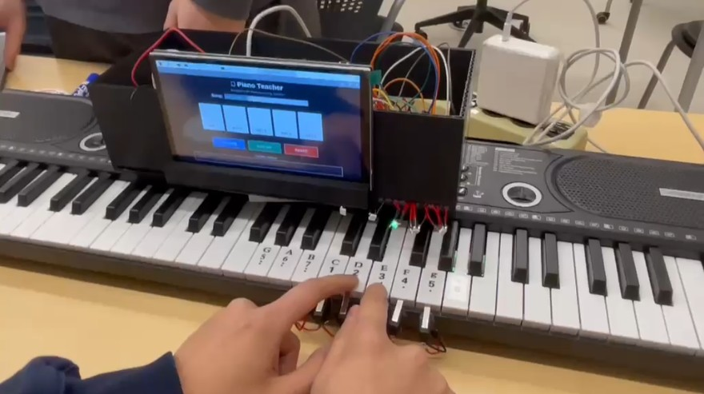
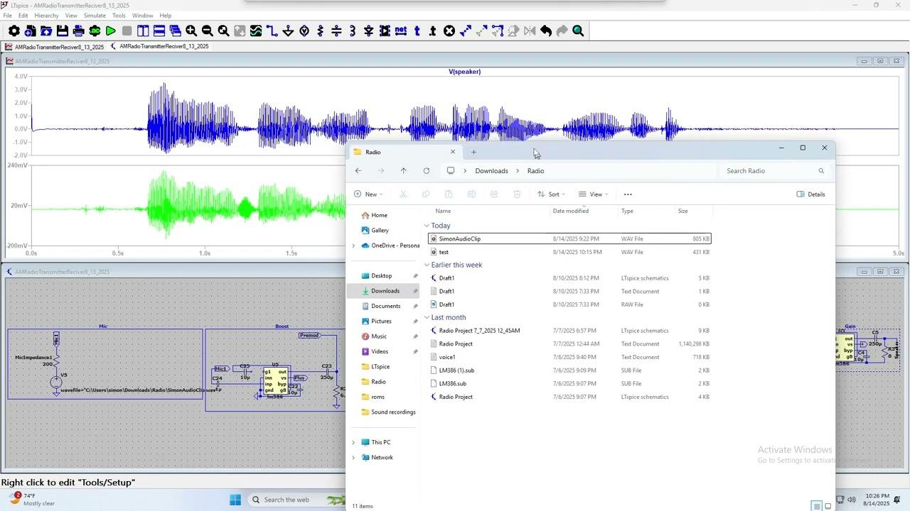
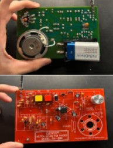
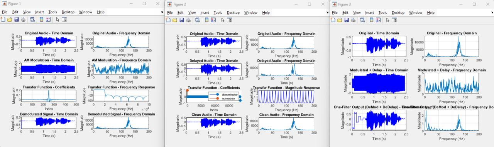
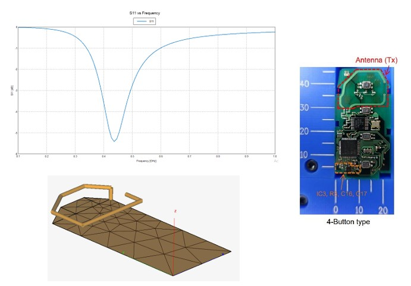
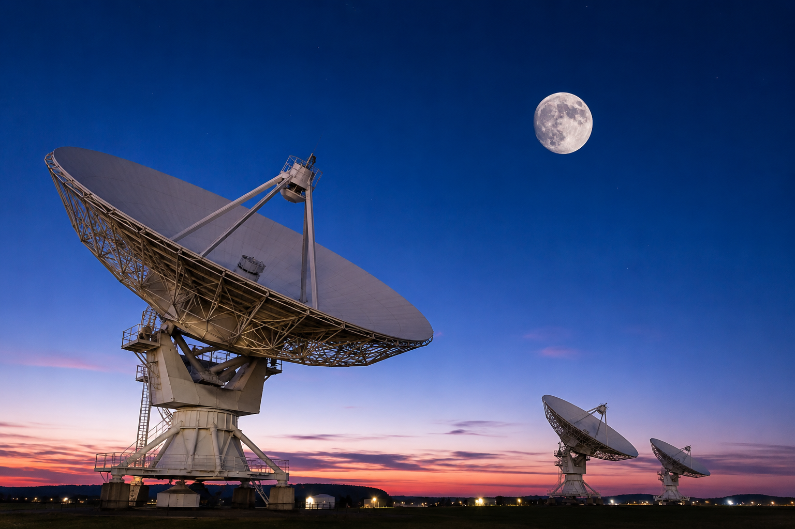

Electrical Engineering · UMass Boston
Duy (Simon) Pham
Electrical Engineering & Computer Science
I'm an incoming senior at UMass Boston working where RF and analog hardware meets embedded firmware — designing analog receivers, real-time telemetry systems, and ML-assisted spectrum sensing. My focus is building secure, reliable hardware systems, from the circuit board up to the firmware running on it.

Education
Education
Academic Honors: Dean's List (2023–2026) · College of Science & Mathematics
- Electrical Engineering — Signals & Systems, Fields & Waves, Electronics I & II, Antenna Design, Digital Systems, Circuits I & II, Probability & Random Processes
- Computer Science & Math — Linear Algebra, Applied ODEs, Computer Programming for Engineers
Work Experience
Work Experience
- Support the design of building electrical power systems — distribution panels, lighting circuits, and branch circuits — for project documentation packages.
- Produce AutoCAD and Revit electrical drawings, including panel schedules and power distribution diagrams, for construction drawing sets.
- Perform electrical load calculations and voltage-drop analysis for commercial building systems during early design phases.
- Coordinate electrical infrastructure with HVAC and architectural layouts alongside multidisciplinary engineering teams.
- Selected to support students through office hours, homework review, and exam preparation across core engineering coursework.
- Guide students through Fourier transforms, convolution, the sampling theorem, and probability distributions via focused, technical problem-solving.
Research
Research Experience
- Deployed a multi-node wireless testbed on Raspberry Pi hardware, collecting RSSI and throughput measurements to build training datasets for ML algorithms.
- Automated data collection and experimental parameter control using XMLRPC and ZMQ Python services orchestrated across the Raspberry Pi node network.
- Tuned distributed spectrum-sensing (DSS) submodels, raising consensus accuracy to ~95% and improving decision speed by ~20%.
- Stood up a Linux (Ubuntu) testbed controller to drive software-defined radio (SDR) spectrum-sensing experiments and coordinate Raspberry Pi nodes.
- Developed MATLAB probability-density-function models to characterize detection thresholds, reducing false-detection rates in the DSS algorithm.
- Authored Bash automation on the testbed controller to securely transfer Python scripts and CSV datasets to and from each node and archive experimental runs.
Poster Preview

Engineering Projects
Engineering Projects
Built an embedded diagnostic system that ingests real-time electronic speed controller (ESC) telemetry on an STM32 microcontroller. Across 30+ instrumented flight trials, I sampled bus voltage, phase current, temperature, and motor-RPM transients, then fused them into a lightweight predictive model that raised edge health-tracking accuracy to 97% and cut false alarms by 25%. Telemetry streams into a custom Python dashboard on a 10 ms refresh loop.

Designed a bare-metal learning platform on a Raspberry Pi that maps musical sequences to real-time hardware feedback. Custom Python libraries parse structured note configurations into direct GPIO bit patterns, driving multi-color LED indicators across a breadboard circuit. MATLAB tracking scripts then quantify user accuracy gains across successive training trials.

Designed and tuned a high-selectivity analog AM receiver from discrete components to capture local Boston broadcasts at 680, 850, and 1510 kHz. The signal chain pairs an adjustable LC bandpass filter with a diode envelope detector and an LM386 audio power stage. Careful layout and grounding suppressed the noise floor by 5 dB, delivering clean voice recovery across dozens of bench tests.

Assembled and characterized an FM receiver to study RF front-end behavior, tuning, and audio demodulation. Verified operation across local FM stations and analyzed antenna effects on reception quality, reinforcing core RF signal-chain and analog-filtering fundamentals.

Implemented a complete digital AM communication chain in MATLAB to apply core signals-and-systems theory to real audio. The pipeline modulates a baseband signal onto a 20 kHz carrier, verifies the frequency translation with FFT analysis, and recovers it through coherent demodulation and FIR low-pass filtering. Delay and echo effects are modeled and then removed with an inverse IIR filter. Results match theory across frequency shifting, filter frequency response, time-domain convolution, Z-transform analysis, and the Nyquist sampling criterion.
View Complete MATLAB Implementation
clc;
clear;
close all;
%% Load Signal
% Audio Sample [Sampling Rate = 192k]
[y192, Fs192] = audioread("inputData/myName192kHz.wav");
%% Variables
% Limit Frequency Range [0 to (192k/2=)96k] (I use 200Hz so it runs faster)
freq_limit = 200;
% Carrier Frequency For AM Modulation
Fc = 20000;
% Cutoff Frequency For AM Demodulation Lowpass [Human Voice: ~0 to ~20k]
cutoff = 20000;
% Filter length [Higher = More Resolution]
M = 501;
% Delay For Voice in Seconds
delaySec = 0.1;
% Attenuating Volume [0 to 1]
volume = 0.6;
%% Plotting Original Signal
% Discrete Number Of Values
N = length(y192);
n = 0:N-1;
% Discrete Number Of Values / Sample Rate To Get Time Vector
t192 = n / Fs192;
% Plotting Time Domain Signal
figure;
subplot(4, 2, 1);
plot(t192, y192, 'b');
title('Original Audio - Time Domain');
xlabel('Time (s)');
ylabel('Magnitude');
soundOriginal = audioplayer(y192, Fs192, 24);
% Frequency Limit To See Human Voice In The Signal
K = round(freq_limit * N / Fs192);
% Manually Calculated FFT
f192 = zeros(K, 1);
for k = 1:K
f192(k) = sum(y192(:, 1) .* exp(-1j * 2 * pi * (k - 1) / N * n'));
end
freqs = (0:k-1) * Fs192 / N;
% Plotting Frequency Domain Signal
subplot(4, 2, 2);
plot(freqs, abs(f192));
title('Original Audio - Frequency Domain');
xlabel('Frequency (Hz)');
ylabel('Magnitude');
%% AM Modulation
% Carrier Wave
carrier = cos(2 * pi * Fc * t192);
% Messenger Wave Modulated With Carrier Wave - - - AM Signal
am_signal = ((1 + y192(:, 1)') .* carrier).';
% Plotting Time Domain Signal
subplot(4, 2, 3);
plot(t192, am_signal, 'b');
title('AM Modulation - Time Domain');
xlabel('Time (s)');
ylabel('Magnitude');
soundModulated = audioplayer(am_signal, Fs192, 24);
% Manually Calculated FFT
f_am = zeros(K, 1);
for k = 1:K
f_am(k) = sum(am_signal(:, 1) .* exp(-1j * 2 * pi * (k - 1) / N * n'));
end
% Plotting Frequency Domain Signal
subplot(4, 2, 4);
plot(freqs, abs(f_am));
title('AM Modulation - Frequency Domain');
xlabel('Frequency (Hz)');
ylabel('Magnitude');
%% AM Demodulation FIR
% Coherent Demodulation
demod_raw = am_signal.' .* carrier;
% Normalized to Sample Rate
wc = 2 * pi * cutoff / Fs192;
% Filter length & MSE
m = 0:M-1;
alpha = (M - 1) / 2;
% Low Pass With Sinc Impulse Response
h = sin(wc * (m - alpha)) ./ (pi * (m - alpha));
h(alpha + 1) = wc / pi;
h = h / sum(h);
% Plotting Impulse Response
subplot(4, 2, 5);
plot(0:M-1, h); grid on;
title('Transfer Function - Coefficients');
xlabel('Index');
ylabel('Magnitude');
% Manually Calculated FFT
H = zeros(K, 1);
for k = 1:K
H(k) = sum(h .* exp(-1j * 2 * pi * (k - 1) / K * m));
end
% Frequency Range to Show All of Transfer Function
fTrans = (0:K-1) * Fs192 / K;
% Limiting Range because Transfer Function Turns to a 'U' else wise.
nyquist = fTrans <= Fs192 / 2;
% Plotting Frequency Response
subplot(4, 2, 6);
plot(fTrans(nyquist), 20 * log10(abs(H(nyquist)))); grid on;
title('Transfer Function - Frequency Response');
xlabel('Frequency (Hz)');
ylabel('Magnitude');
% Manually Calculated FIR
demod_signal = zeros(N, 1);
for i = 1:N
for j = 1:M
if (i - j + 1 > 0)
demod_signal(i) = demod_signal(i) + demod_raw(i - j + 1) * h(j);
end
end
end
demod_signal = demod_signal - mean(demod_signal);
demod_signal = 2 * demod_signal;
% Plotting Time Domain Signal
subplot(4, 2, 7);
plot(t192, demod_signal, 'b');
title('Demodulated Signal - Time Domain');
xlabel('Time (s)');
ylabel('Magnitude');
soundDemodulated = audioplayer(demod_signal, Fs192, 24);
% Manually Calculated FFT
f_demod = zeros(K, 1);
for k = 1:K
f_demod(k) = sum(demod_signal(:, 1) .* exp(-1j * 2 * pi * (k - 1) / N * n'));
end
% Plotting Frequency Domain Signal
subplot(4, 2, 8);
plot(freqs, abs(f_demod));
title('Demodulated Signal - Frequency Domain');
xlabel('Frequency (Hz)');
ylabel('Magnitude');
%% Plotting Original Signal For Next Graphs
% Plotting Time Domain Signal
figure;
subplot(4, 2, 1);
plot(t192, y192, 'b');
title('Original Audio - Time Domain');
xlabel('Time (s)');
ylabel('Magnitude');
% Plotting Frequency Domain Signal
subplot(4, 2, 2);
plot(freqs, abs(f192));
title('Original Audio - Frequency Domain');
xlabel('Frequency (Hz)');
ylabel('Magnitude');
%% Creating Delay
% Delay samples
delaySamples = round(delaySec * Fs192);
% Delay Time Signal
yDelay(:, 1) = y192(:, 1);
for i = (delaySamples + 1):N
yDelay(i, 1) = y192(i, 1) + volume * y192(i - delaySamples, 1);
end
% Plotting Time Domain Signal
subplot(4, 2, 3);
plot(t192, yDelay, 'b');
title('Delayed Audio - Time Domain');
xlabel('Time (s)');
ylabel('Magnitude');
soundDelay = audioplayer(yDelay, Fs192, 24);
% Delay Frequency Signal
fDelay = zeros(K, 1);
for k = 1:K
fDelay(k) = sum(yDelay(:, 1) .* exp(-1j * 2 * pi * (k - 1) / N * n'));
end
% Plotting Frequency Domain Signal
subplot(4, 2, 4);
plot(freqs, abs(fDelay));
title('Delayed Audio - Frequency Domain');
xlabel('Time (s)');
ylabel('Magnitude');
%% Removing Delay With IIR
yClean = zeros(size(yDelay));
for i = 1:N
if i > delaySamples % Meaning delaySec Has Passed
yClean(i, 1) = -volume * yClean(i - delaySamples, 1) + yDelay(i, 1);
else % Meaning Delay Hasn't Started Yet
yClean(i, 1) = yDelay(i, 1);
end
end
% Transfer Function Formula From Slides H(e^(jw)) = 1/(1-ae^(-jw))
co = zeros(1, delaySamples + 1);
co(1) = 1;
co(end) = -volume;
H = zeros(size(freqs));
for k = 1:K
H(k) = 1 ./ (co * (exp(-1j * 2 * pi * freqs(k) / Fs192 * (0:delaySamples))).');
end
% Plotting Coefficients
subplot(4, 2, 5);
hold on;
stem(0:length(co)-1, co, 'filled');
stem(0:length(1)-1, 1, 'filled');
hold off;
title('Transfer Function - Coefficients');
xlabel('Index');
ylabel('Magnitude');
legend('denominator', 'numerator');
% Plotting Magnitude Response
subplot(4, 2, 6);
plot(freqs, abs(H), 'b');
title('Transfer Function - Magnitude Response');
xlabel('Frequency (Hz)');
ylabel('Magnitude');
% Plotting Time Domain Signal
subplot(4, 2, 7);
plot(t192, yClean, 'b');
title('Clean Audio - Time Domain');
xlabel('Time (s)');
ylabel('Magnitude');
soundClean = audioplayer(yClean, Fs192, 24);
% Manually Calculated FFT
fClean = zeros(K, 1);
for k = 1:K
fClean(k) = sum(yClean(:, 1) .* exp(-1j * 2 * pi * (k - 1) / N * n'));
end
% Plotting Frequency Domain Signal
subplot(4, 2, 8);
plot(freqs, abs(fClean));
title('Clean Audio - Frequency Domain');
xlabel('Time (s)');
ylabel('Magnitude');
%% Mod -> Demod -> Delay -> DeDelay
% Redefine the signal length and index vector
x = y192(:, 1);
N = length(x);
n = 0:N-1;
% AM Modulation
carrier2 = cos(2 * pi * Fc * t192).';
am_signal2 = (1 + x) .* carrier2;
% AM Coherent Demodulation
demod_raw2 = am_signal2 .* carrier2;
% FIR Lowpass
wc = 2 * pi * cutoff / Fs192;
m = 0:M-1;
alpha = (M - 1) / 2;
h = sin(wc * (m - alpha)) ./ (pi * (m - alpha));
h(alpha + 1) = wc / pi;
h = h / sum(h);
% Transfer function FFT display
Hlp = zeros(K, 1);
for k = 1:K
Hlp(k) = sum(h .* exp(-1j * 2 * pi * (k - 1) / K * m));
end
fTrans = (0:K-1) * Fs192 / K;
nyquist = fTrans <= Fs192 / 2;
% Manual FIR Convolution
demod_signal2 = zeros(N, 1);
for i = 1:N
for j = 1:M
if (i - j + 1 > 0)
demod_signal2(i) = demod_signal2(i) + demod_raw2(i - j + 1) * h(j);
end
end
end
demod_signal2 = demod_signal2 - mean(demod_signal2);
demod_signal2 = 2 * demod_signal2;
soundDemodulated2 = audioplayer(demod_signal2, Fs192, 24);
% Delay (applying to the DEMOD signal)
delaySamples = round(delaySec * Fs192);
yDelay2 = demod_signal2;
for i = (delaySamples + 1):N
yDelay2(i, 1) = demod_signal2(i, 1) + volume * demod_signal2(i - delaySamples, 1);
end
soundDelay2 = audioplayer(yDelay2, Fs192, 24);
% Removing Delay With IIR (inverse comb)
yClean2 = zeros(size(yDelay2));
for i = 1:N
if i > delaySamples
yClean2(i, 1) = yDelay2(i, 1) - volume * yClean2(i - delaySamples, 1);
else
yClean2(i, 1) = yDelay2(i, 1);
end
end
soundClean2 = audioplayer(yClean2, Fs192, 24);
%% Time & Freq Domain Plots for (Original, Mod2, Demod2, Delay2, and DeDelay2)
figure;
% Original (Time Domain)
subplot(5, 2, 1);
plot(t192, x, 'b');
title('Original - Time Domain');
xlabel('Time (s)'); ylabel('Magnitude');
% Original (Frequency Domain)
f_orig2 = zeros(K, 1);
for k = 1:K
f_orig2(k) = sum(x .* exp(-1j * 2 * pi * (k - 1) / N * n'));
end
subplot(5, 2, 2);
plot(freqs, abs(f_orig2), 'b');
title('Original - Frequency Domain');
xlabel('Frequency (Hz)'); ylabel('Magnitude');
% AM Mod (Time Domain)
subplot(5, 2, 3);
plot(t192, am_signal2, 'b');
title('AM Modulated (Mod2) - Time Domain');
xlabel('Time (s)'); ylabel('Magnitude');
% AM Mod (Frequency Domain)
f_am2 = zeros(K, 1);
for k = 1:K
f_am2(k) = sum(am_signal2 .* exp(-1j * 2 * pi * (k - 1) / N * n'));
end
subplot(5, 2, 4);
plot(freqs, abs(f_am2), 'b');
title('AM Modulated (Mod2) - Frequency Domain');
xlabel('Frequency (Hz)'); ylabel('Magnitude');
% Demod (Time Domain)
subplot(5, 2, 5);
plot(t192, demod_signal2, 'b');
title('Demodulated (Demod2) - Time Domain');
xlabel('Time (s)'); ylabel('Magnitude');
% Demod (Frequency Domain)
f_demod2 = zeros(K, 1);
for k = 1:K
f_demod2(k) = sum(demod_signal2 .* exp(-1j * 2 * pi * (k - 1) / N * n'));
end
subplot(5, 2, 6);
plot(freqs, abs(f_demod2), 'b');
title('Demodulated (Demod2) - Frequency Domain');
xlabel('Frequency (Hz)'); ylabel('Magnitude');
% Delay (Time Domain)
subplot(5, 2, 7);
plot(t192, yDelay2, 'b');
title('Demod + Delay (Delay2) - Time Domain');
xlabel('Time (s)'); ylabel('Magnitude');
% Delay (Frequency Domain)
f_delay2 = zeros(K, 1);
for k = 1:K
f_delay2(k) = sum(yDelay2 .* exp(-1j * 2 * pi * (k - 1) / N * n'));
end
subplot(5, 2, 8);
plot(freqs, abs(f_delay2), 'b');
title('Demod + Delay (Delay2) - Frequency Domain');
xlabel('Frequency (Hz)'); ylabel('Magnitude');
% Clean (Time Domain)
subplot(5, 2, 9);
plot(t192, yClean2, 'b');
title('Final: Delay Removed (DeDelay2) - Time Domain');
xlabel('Time (s)'); ylabel('Magnitude');
% Clean (Frequency Domain)
f_clean2 = zeros(K, 1);
for k = 1:K
f_clean2(k) = sum(yClean2 .* exp(-1j * 2 * pi * (k - 1) / N * n'));
end
subplot(5, 2, 10);
plot(freqs, abs(f_clean2), 'b');
title('Final: Delay Removed (DeDelay2) - Frequency Domain');
xlabel('Frequency (Hz)'); ylabel('Magnitude');
% Audio players
soundOriginal2 = audioplayer(x, Fs192, 24);
soundModulated2 = audioplayer(am_signal2, Fs192, 24);
soundDemod2 = audioplayer(demod_signal2, Fs192, 24);
soundDelay2 = audioplayer(yDelay2, Fs192, 24);
soundClean2 = audioplayer(yClean2, Fs192, 24);
%% To Hear Sounds, type "play(sound...)"
% Original Audio File
disp('Original: play(soundOriginal)');
% Mod and Demod Audio
disp('AM Modulated: play(soundModulated)');
disp('AM Demodulation: play(soundDemodulated)');
% Delay and Clean Audio
disp('With Delay: play(soundDelay)');
disp('Delay Removed: play(soundClean)');
% Mod -> Demod -> Delay -> DeDelay Audio in order
disp('Original: play(soundOriginal2)');
disp('AM Modulated: play(soundModulated2)');
disp('Demodulated: play(soundDemod2)');
disp('With Delay: play(soundDelay2)');
disp('Delay Removed: play(soundClean2)');

Investigated the performance limitations of a 315 MHz Toyota smart key fob to explain why its unlock range trailed competing vehicles. Analyzed the internal ~6 cm PCB trace antenna, evaluating how its copper layout and transmitter-IC placement affected RF signal strength and radiation efficiency, then proposed miniaturized meander PCB antenna designs as a remedy.

Derived the performance requirements for an Earth-Moon-Earth (EME) radar system designed to bounce radio signals off the lunar surface. Applied the radar range equation across the 385,000 km propagation path to budget path loss, antenna gain, and system noise temperature — sizing a 20 m dish capable of sustaining a reliable 20 dB signal-to-noise ratio.

Technical Skills
Technical Skills
Conferences & Engagement
Conferences & Engagement
New England Workshop on Software Defined Radio
Form & Function Robotics Challenge Competition